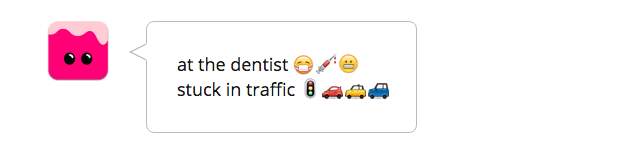
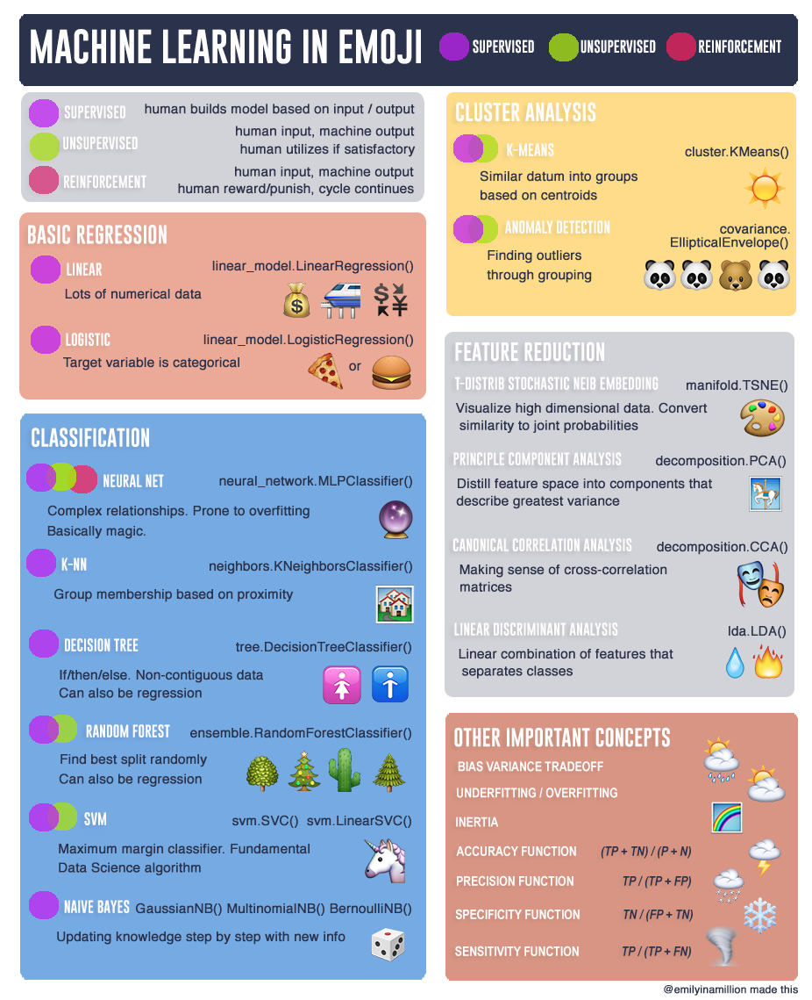

Hello World
CodeTengu Weekly 碼天狗週刊
CodeTengu Weekly 會在 GMT+8 時區的每個禮拜一早上 10:00 出刊，每一期會從目前的 curator 名單中選出三位來負責當期的內容，每一位 curator 各自負責不同的領域，如果你在這一期沒有看到自已感興趣的東西，說不定下一期就會有了。你也可以瀏覽一下前幾期的內容，有價值的東西是不會過時的。
以下是目前的 curator 陣容：
- @vinta - I failed the Turing Test - 科幻迷，最近在讀「家畜人鴉俘」
- @saiday - Imnotyourson - 太熱了
- @tzangms - Oceanic / 人生海海 - 衝動型購物
- @fukuball - ImFukuball - 大家都在講 Deep Learning，但是連基本 Machine Learning 都不會
- @wancw - 命剋公司的工程師
- @mingderwang
- @kako0507 - 熱愛嘗試新事物的前端工程師
- @chiahsien - Nelson
- @hiroshiyui - 非典型司書
- @uranusjr - Smaller Things - 不愛談技術的技術人，最近對做菜很有興趣
- @kkdai - 態度萬歲 - 喜歡 Golang 的略懂工程師
- @yhsiang
大家也可以關注 CodeTengu 的 Facebook、Twitter、GitHub 或微博，有很多 Weekly 看不到的內容。有任何建議或疑問也可以來 Gitter 聊聊，歡迎亂入 👺
 @fukuball
@fukuball
Marijuana through the lens of the New York Times - 大麻觀感的歷史變化
Machine Learning、Data Science：中級
近來美國大眾對於大麻合法化的呼聲越來越高，其實大眾對於大麻的觀感是有在變化的，本篇文章分析了 New York Times 上 1926 年到 2016 年關於大麻的文章，將文章以年代分群後可以觀查看出每個年代對於大麻的觀感變化，整個做法是一個很標準的文本分析方法。
具體做法就是將每個年代的文章使用 TFIDF 算出每個關鍵字的重要性之後表示成一個向量再進行比較，可以預見這樣的向量一定是一個非常稀疏、維度又很高的向量，所以需要使用主成分分析（PCA） 方法來將向量進行降維。PCA 這個降維方法在統計、機器學習及資料科學是非常常見的降維方法，能夠將高維度的向量整合至低維度且各維度有正交性質的向量，所以才稱為主成分分析。
至於最後的分群，作者很簡單地對向量計算 cosin similarity 來分群，當 PCA 取 9 個主成分的時候，可以看出五個明顯的分群，如此就可以對這些分群進行更進一步的文本分析，這個部分當然就要人去觀察解釋啦！整個分析的過程作者有放到 GitHub 喔，大家參考一下～

Teaching Robots to Feel: Emoji & Deep Learning - 讓機器了解 Emoji
Machine Learning：初級
類神經網路被 Facebook 用在照片中的臉部辨識、被 Google 用在辨識照片中的任何東西、被 Apple 用在辨識人們說了什麼，那麼我們可以用同樣的技術來讓機器了解 Emoji 的意涵嗎？Dango 就是一個結合 Machine Learning 與 Emoji 的有趣應用。
{kind=link}
Emoji 在現今的訊息或社交軟體中幾乎無所不在，很多人也習慣使用 Emoji 來表達與溝通，當機器能夠透過 Machine Learning（這邊是使用類神經網路方法）了解 Emoji，便可以用以了解句子與 Emoji 的語意連結，推薦合適的 Emoji 給使用者。推薦 Emoji 乍聽之下好像沒有什麼神奇的地方，像是 Line 也是可以推薦貼圖，但仔細觀察 Line 的推薦其實是使用關鍵字做推薦的（應該是），Emoji 似乎也可以用同樣的方法做推薦。但只用關鍵字做推薦的效果並不佳，Emoji 會根據句子的上下文有不同的含義，且 Combo Emoji 也常常被使用來表達更多意思（如果所示），所以需要讓機器了解語意層次上句子和 Emoji 的關係。
使用 Dango 將句子及 Emoji 經過類神經網路的學習之後可以 mapping 到一個高維的語意空間，如此就可以將句子和 Emoji 進行向量相似推薦，也就可以做到 Combo Emoji 的推薦了！大家如果對這樣的應用有興趣也可以去下載來玩玩看～ 像這樣使用 Machine Learning 技術幫助溝通表達的工具也越來越多了，像是 FoxType 這個應用還可以教你怎麼寫信比較好，真的很酷！Machine Learning 還有許多有趣的應用等大家去發掘！
延伸閱讀：
林軒田教授機器學習技法 Machine Learning Techniques 第 1 講學習筆記
Machine Learning：中級
在 CodeTengu 分享 Machine Learning 相關文章不知不覺也將林軒田教授的機器學習基石課程完成了，若大家都有跟上腳步應該也有辦法寫出一些基本的機器學習演算法，若還是寫不出來，我開源的機器學習套件 FukuML 大家可以參考一下，多少會有幫助。
基礎的課程之後才是真正的重頭戲，我會繼續帶著分享林軒田教授的機器學習技法課程，一些目前在機器學習領域常用的算法像是支持向量機、決策樹、類神經網路等等都會在課程中介紹到。首先登場的就是支持向量機（Support Vector Machine），第一講中我們將先介紹最簡單的 Hard Margin Linear Support Vector Machine。
PHP 實務上如何活用 Closure?
PHP、Programming：中級
本篇文章是 CodeTengu Issue 46 PHP 如何使用 Closure? 的延伸，了解了 Closure 語法後，當然要知道實際上我們怎麼使用它。
以觀察 Laravel 上如何使用 Closure 並實際舉例說明，大致可歸納出使用 Closure 的三個時機：
- 由使用者執行一段邏輯
- 由使用者決定一個布林
- 由使用者改變一個物件
蠻深入潛出的一篇文章，不過我其實會認為只要函式中有需要讓使用者客製處理的程式碼，應該就可以寫成 Closure。
@hiroshiyui
Erlang/OTP 19 帶來新的 state machine behaviour module: gen_statem
本週雙 E 語言皆有大事，Erlang/OTP 19.0 與 Elixir 1.3 釋出。我發現的亮點之一，是 Erlang/OTP 19 帶來新的 state machine behaviour module: gen_statem。
在 Erlang 既有的 gen_fsm 之外，gen_statem 以另外一種設計哲學來提供實作 state machine 所需的要素，我不覺得有孰優孰劣的差別，就是設計哲學不同、看各人覺得哪個順眼而已。順道一提，Elixir 已有人為 gen_statem 包了 gen_state_machine。
同場加映：Rage Against The Finite-State Machines | Learn You Some Erlang for Great Good!
Erlang/Elixir on Docker and Hot Code Swap
之前跟同事討論，恰巧也被問到與這則 Stack Overflow 問答一樣的問題：「既然現在我們有了 Docker，軟體版本升級就是包個新版 image 換掉舊版 container，那麼 Erlang 強調的 Hot Code Swap 賣點，還能算得上是賣點嗎？」
我覺得 Amiramix 這位的回答很好，給了很務實的建議：如果你的產品性質容不得中斷再開、追求好幾個 9 的 HA、zero downtime，那麼用 Erlang 的 Release Handling 機制做更版是再適合不過的；反之，採用 Docker 方式抽換 container，簡單、快速、近乎無腦，也沒什麼不好。
每个架构师都应该研究下康威定律
這篇寫的真好，非身經百戰的人寫不出這樣的心得文章，推薦給各位同是（或自認是）架構師、有心想做好 DevOps 的讀者。最初分享這篇給我的是強者同事 Ash Wu，對於當時有點見樹不見林的我，猶如當頭棒喝。
我覺得做架構、DevOps 這件事，真的要時時思考、念茲在茲「我這樣『做』，可以對『誰』產生什麼樣的『價值』？」而不光是在工具、架構圖上兜圈子。
"How should I design my Android application? What kind of MVC pattern should I use? What should I use for an event bus?"
在 Google 工作的這位 Dianne Hackborn 曾經發文解釋 Android 為何就是無法給人像別家那樣流暢的使用體驗（當然隨著版次更迭，如今的 Android 已經非吳下阿蒙了）。
這篇是她近期的又一力作，解釋 Android Framework 之所以解耦成 Activity, BroadcastReceiver, Service, ContentProvider 四大天王，除此之外不硬帶入特別的 design patterns 之設計緣由，非常值得還未能理解「Android 為何如此設計」的開發者一讀，頗為發聾振聵。
 @yhsiang
@yhsiang
Integrate Stylelint Into Your Workflow For Better CSS
如果你有用 ESLint 或 JSLint 來檢查你的 JS code 的話，你的 CSS 是否也有使用 CSSLint 之類的工具來幫助你呢？這篇文章介紹了一個新的 CSS 檢查工具，Stylelint。若你剛好也有在使用 Webpack ，可以花點時間按照文章的設定流程，替你的開發環境中加入 stylelint 吧！
Understanding the Elm type system
這篇很完整的介紹了 Elm 的型別系統。相對於 JS 的弱動態型別，Elm 是強靜態的型別系統，帶來的好處就是沒有 Runtime Exception。因為所有可能發生的錯誤都能 Compile time 的時候幫你抓出來。
Elm 最有趣的是能夠使用 Type alias 幫你建立易讀性高的型別。這使得 Elm 能夠寫出簡潔優美的程式碼，如果有機會，各位一定要嘗試看看。
Promises: All The Wrong Ways
Promise 已經是前端工程師必備的知識，本篇指出許多錯誤的 Promise 用法。
作者從基本的錯誤到 Side-Effects 都有範例，建議看完後也可以檢查一下自己的程式碼是不是也犯了這些錯誤。
Quick Tip: How z-index and Auto Margins Work in Flexbox
這篇介紹了 flexbox 進階的兩個小技巧。
- z-index 也可以作用在元素是 flex 的情況下。
- 使用
margin-right: auto也是一個將相鄰元素置右的方式。而flex-grow: 1也可以達到一樣的效果。
How we do visual regression testing
不知道各位有在做 CSS Regression Testing 嗎？本文介紹了他們怎麼選擇 Regression Testing 的 tool，並開源了他們的工具 Spectre。Sepectre 是基於 Ruby on Rails 的一套工具，能幫助你管理 regression test suites。
文中提到了他們如何整合 Selenium 跟 Jenkins 幫助前端跟 QA 建置整個 Visual Regression Testing 的過程，如果剛好你也想導入 Regression Testing 在公司的開發流程當中，可以嘗試一下 Spectre。
Random Cool Stuff

The Making of a Cheat Sheet: EMOJI Edition（Machine Learning）
這是一個將 Machine Learning 與 Emoji 結合的 Cheat Sheet，作者挑選的 Emoji 是有那麼一點道理，Machine Learning 分成這幾個部份也算蠻清楚的，關鍵字再配合上 scikit-learn 提供的相關 methods，用在查詢相關資料會很有幫助！
由 @fukuball 分享。